Composition is the order you bring to a scene. It’s about what you let into the frame and where you put it. Get it right and the viewer’s eye goes straight to what matters, then finds somewhere pleasant to rest. Get it wrong and the eye wanders around, never quite sure what the picture is about.
None of these techniques is a law. They’re patterns that photographers and painters have noticed again and again, because they match the way our eyes move through a picture. Learn them well enough to spot them in the viewfinder without thinking. Then break them on purpose when a picture asks for it. Each one comes with its illustration from the cheat sheet, and the red lines show the idea at work.
Take them one at a time. Read a technique, then go for a walk looking for that one thing, camera ready. Soon you’ll see lines and frames everywhere. Before long you’ll be combining them without trying. Each technique links to its exercise at the end of the chapter.
Technique 1
Rule of thirds
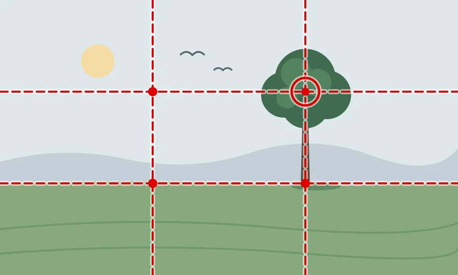
Picture two horizontal and two vertical lines cutting the frame into nine equal parts, like a noughts-and-crosses grid. Put the horizon on one of the horizontal lines instead of through the middle. Now the sky or the land gets the bigger share, and the picture looks like you meant it. Put your main subject where two lines cross. It gets weight without being stuck dead centre.
Most cameras and phones can show this grid on screen, so turn it on. Use the lower line when the sky is the interesting part and the upper line when the foreground is. In a portrait, put the eyes near the upper line.
It works just as well when you crop afterwards. If a picture feels static, try trimming one side so the subject moves onto a third. Many photographers shoot a little wider than they need for exactly this reason, then fine-tune the placement on the computer. Over time you’ll place things on the thirds without thinking, and that’s when it’s worth trying the centre again, on purpose.
Technique 2
Leading lines
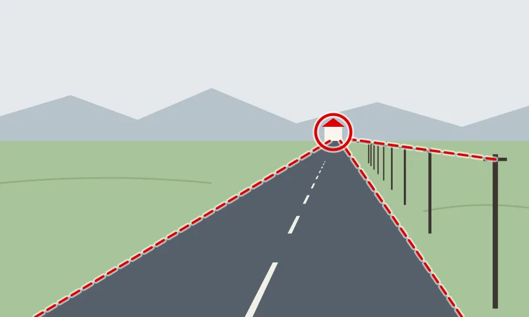
Our eyes follow lines. Roads, railway tracks, rivers, fences and the edges of buildings all work as paths into a picture. When one starts near the bottom or a corner and runs towards your subject, the viewer travels along it and arrives right where you want them.
Lines that meet at a vanishing point add depth too. A flat scene suddenly feels like a place you could walk into. Look for the line first and the subject second, then move until the line points the right way. Watch out for lines that run out of the frame. They take the viewer’s attention with them.
Lines don’t have to be straight or obvious. A trail of footprints in sand will do the job, and so will a row of lamp posts or the edge of a shadow. Try crouching low with a wide lens so the line starts right at the bottom of the frame. It’ll look longer, and it’ll pull harder.
Technique 3
Symmetry
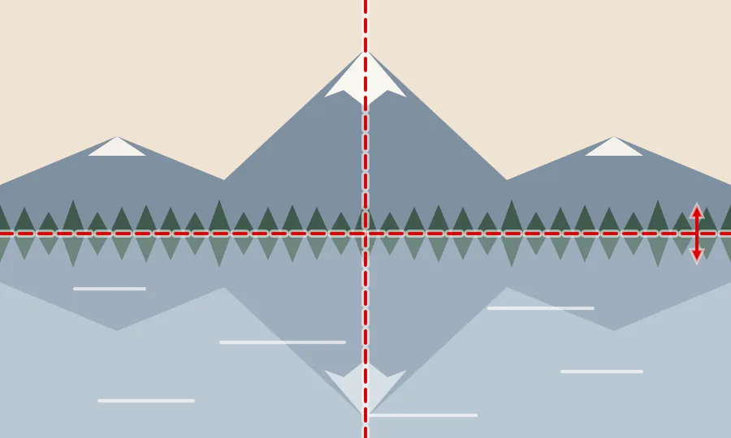
Here’s the one time it pays to put things in the middle. Buildings, reflections in still water and plenty of natural forms are mirror images. Centre them and the picture feels calm and formal, almost ceremonial.
Symmetry only works when it’s exact. Stand on the true centre line, keep the camera level and square, and check every edge of the frame for anything that spoils the balance. Reflections are easiest early or late in the day, when the wind drops and the water goes still. Breaking a perfect symmetry can be strong too. Think of one person on an empty staircase.
Water is the easiest way in. A puddle after rain can mirror a whole building if you hold the camera close to its surface. Indoors, look for corridors and arched halls, where architects have already done the work for you. Use the grid on your screen to find the exact centre, and take a moment to check that the verticals stay vertical.
Technique 4
Frame within a frame
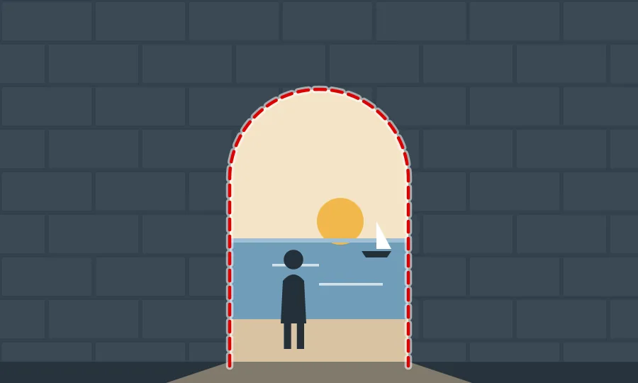
Doorways, windows, arches, gaps in the leaves and even other people can wrap a second frame around your subject. It pulls attention inwards and adds depth. Often it also tells the viewer where you were standing.
The inner frame usually works best when it’s darker than the subject, because the eye goes to the brightest part of a picture first. Expose for whatever lies beyond the frame and let the frame itself drop into shadow. It doesn’t need to be complete or sharp. A few soft branches along one edge can be enough.
Frames don’t have to be architecture. Two friends standing apart can frame a third person between them, and a gap in the trees can frame a distant hill. You can even make a frame out of blur. Hold the lens close to some leaves, let them go soft, and they turn into a loose border around the sharp subject beyond.
Technique 5
Negative space
Negative space is the empty area around a subject. Open sky, calm water, a blank wall, fog. Instead of filling every corner, you let the subject sit small inside a lot of nothing, and the emptiness becomes part of the message. It can feel calm or lonely, or show how big the world is.
The empty part has to be truly empty and fairly even in tone. Place the subject off-centre, often on a third, and give it room on the side it faces or moves towards. Minimal pictures reward patience. Wait for the single boat or bird to reach the right spot.
Think about where the empty space sits, not just how much of it there is. Space above a subject feels light and open. Space below can feel heavy, almost as if the subject were floating. Negative space also leaves room for words, which is why designers love these pictures for posters and covers.
Technique 6
Golden spiral
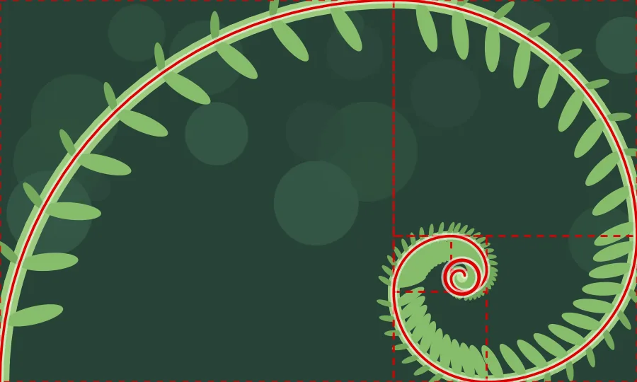
The golden spiral comes from the golden ratio, roughly 1 to 1.618, a proportion you’ll find in shells and in classical buildings. Laid over a picture, it curls in from one corner to a point about a third of the way in from two sides. Put your point of interest at that eye. Let lines and curves follow the spiral towards it, and the viewer gets a natural, flowing path through the frame.
In practice the eye of the spiral sits close to a rule-of-thirds point. The difference is that the spiral cares about curves that lead in. Many editing programs can lay it over the crop tool, and that’s the easiest way to learn to see it.
Don’t worry about matching the spiral exactly. Treat it as a reminder that the eye enjoys a curving route into a picture that ends somewhere off-centre. Natural spirals turn up in shells and curled leaves once you start looking. The overlay is a check, not a template, and the picture should still work without it.
Technique 7
Diagonals
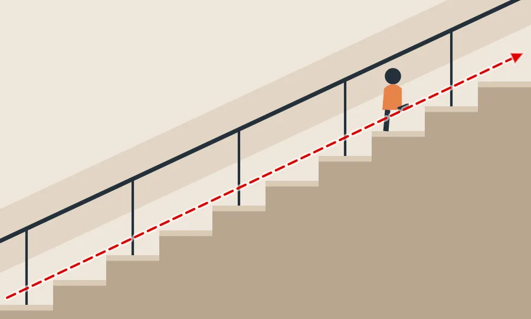
Horizontal lines feel calm. Vertical lines feel strong and still. Diagonals feel like movement and tension, so a staircase, a slanting roof, a road climbing a hill or a shadow cutting from corner to corner brings energy to a picture.
You can often make a diagonal just by moving. Step to the side of a straight path, or look up along a building. Be careful with a tilted horizon, though. Unless it’s clearly on purpose, people will read it as a mistake.
Diagonals turn up in people too. A leaning figure or a dancer mid-jump brings the same energy as a slanting line. With sport and action, change your own position instead of tilting the camera. Shooting slightly from below often makes the motion run across the frame at an angle.
Technique 8
Pattern and repetition
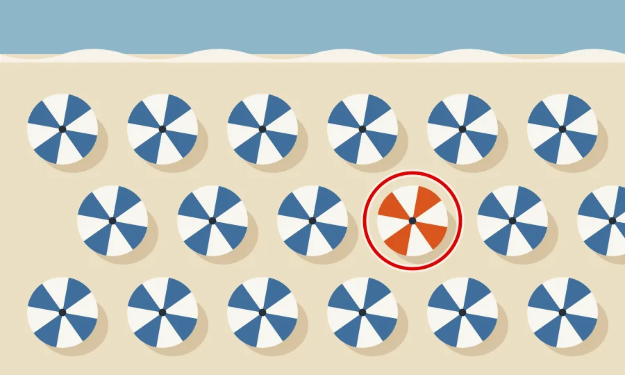
Repeating shapes and colours are naturally pleasing. Rows of seats, stacked boats, windows on a facade, ripples in the sand. Fill the whole frame with a pattern so it seems to carry on past the edges and you’ve got a strong graphic picture.
Then look for the odd one out. One umbrella in a different colour, or one person walking against the crowd. A single break catches the eye at once, and the pattern around it makes it stand out far more than it would alone. Shooting from above or with a longer lens flattens the pattern and cuts out distractions.
Patterns hide in plain sight. Look down at paving stones and up at balconies. Markets are full of them, from stacked fruit to rolls of fabric. If you can’t find a natural break in the pattern, wait for one. A pigeon landing on a row of identical chairs can make the whole picture.
Technique 9
Fill the frame
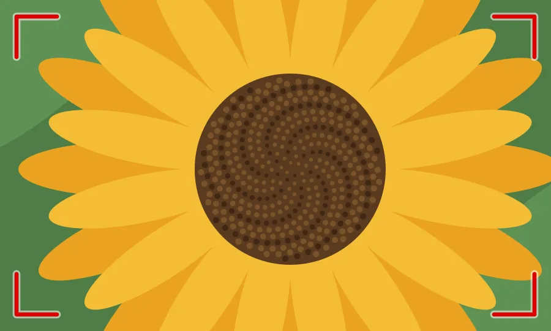
Lots of beginners’ photos show the subject too small, surrounded by stuff that doesn’t matter. Filling the frame means getting closer, or zooming in, until the subject takes up most of the picture. Texture and expression become the subject.
Use your feet first. Stepping closer also changes the perspective and makes the picture feel more intimate. Don’t be afraid to cut parts off at the edges. A face cropped at the forehead, or a flower spilling past the frame, can be stronger than the whole thing.
Filling the frame is also a handy way to deal with a dull sky or a messy background, because you simply leave them out. With people it changes the mood completely. A tight portrait feels personal and direct, and the viewer can’t look anywhere but at the face. Try it with surfaces as well, like tree bark or peeling paint, where the texture becomes the whole subject.
Technique 10
Layers of depth
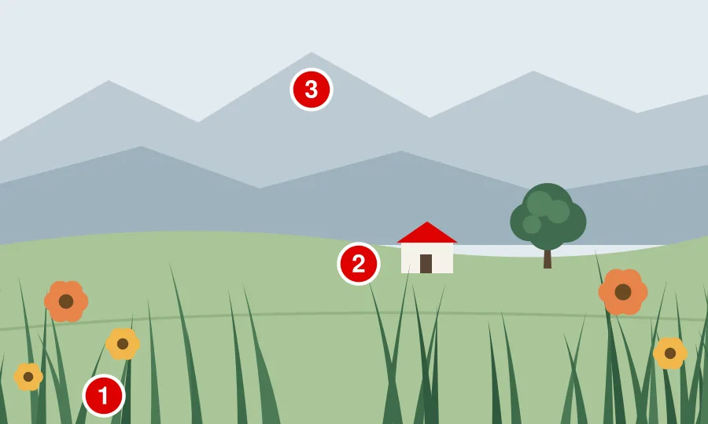
A photograph is flat, so depth has to be suggested. One easy way is to build layers. Put something close to the camera at the front and your main subject in the middle distance, with a background behind it. The eye travels from front to back and the scene starts to feel three-dimensional.
Landscape photographers often crouch low to bring flowers or rocks into the foreground. They use a wide lens and a small aperture to keep it all sharp. Overlapping shapes help, and so does haze, which makes distant hills look paler and bluer.
Layers work in the city just as well. A tram in front, people in the middle and a skyline behind give the same front-to-back journey as flowers, a cottage and mountains. Keep the layers distinct with light or colour. If everything shares the same tone, the layers merge and the depth disappears.
Technique 11
Point of view
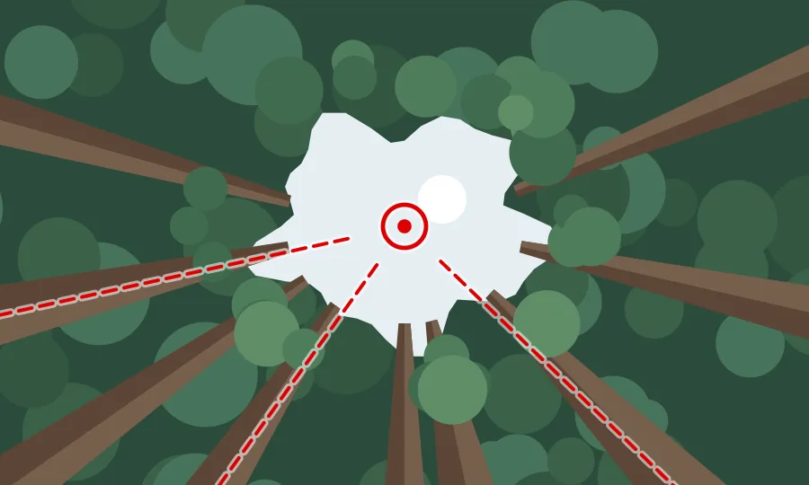
Most photos are taken from standing eye height, which is exactly how everyone already sees the world. Change your height and you change the picture. Crouch low and small things loom large against the sky. Hold the camera right at ground level and a puddle becomes a lake. Lie down and look straight up through the trees, and the scene turns into an abstract pattern. Climb up and look down to show layout and context.
Children and animals almost always look better from their own eye level. Before you press the shutter, ask yourself whether a step to the side, or a crouch, would tell the story better.
The best viewpoint is often only a metre or two from where you first stood. Walk around your subject before you start shooting, and notice how the background changes with every step. A low angle can also hide a messy background behind plain sky, which is a useful trick at busy places.
Technique 12
Room to move
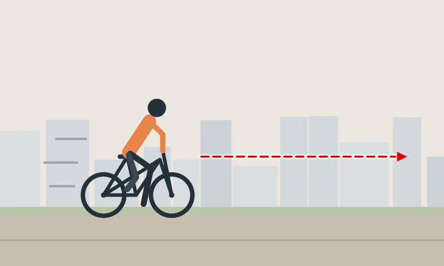
When a subject moves or looks in one direction, viewers look that way too. Leave open space in front of it, on the side it’s heading or looking, and the movement has somewhere to go. A cyclist on the left of the frame riding right feels natural. Put the same cyclist hard against the right edge and they seem about to leave the picture.
Portraits work the same way. Leave more space on the side the person faces. Break the rule on purpose, with the subject close to the edge they face, and you get tension, or a feeling that something’s been left behind.
It even applies to things that don’t move. A statue gazing to the left or a tree leaning one way will feel better with space in front of it. When you crop afterwards, check which way your subject faces before you decide which side to trim.
Exercises
Exercises 1–12. Tick each one off when you’ve tried it. Your ticks stay on this phone or computer.
- 1
Rule of thirds
Turn on the grid. Shoot the same landscape with the horizon on the lower third, then the upper third, then right through the middle. Next, put a single tree or person on each of the four crossing points. Lay the results side by side and decide which feels strongest, and why.
- 2
Leading lines
Find five different lines near home, like a road or a fence. For each one, find the spot where the line runs from a bottom corner straight to a subject. Then take one picture where the line leads out of the frame, and compare.
- 3
Symmetry
Find a symmetrical building or a reflection. Stand exactly on its centre line and make the picture perfectly balanced, checking all four edges. Then take a second picture with one thing that breaks the symmetry.
- 4
Frame within a frame
Go for a walk looking only for frames. Doorways, windows, arches, gaps in hedges, bridges. Photograph a subject through at least four different kinds. Expose for the subject and let the frame go dark.
- 5
Negative space
On a foggy day or by calm water, photograph one small subject, like a boat or a lone walker, so it fills less than a tenth of the frame. Keep the empty area clean and put the subject on a third.
- 6
Golden spiral
Look for natural curves, like a fern or a spiral staircase seen from above. Take a few shots, then lay the golden spiral over them in your editor’s crop tool. Crop so the curve flows into the eye of the spiral.
- 7
Diagonals
Photograph a staircase or a sloping street twice. Once square-on, so the lines run across the frame. Once from the side, so they run corner to corner. Notice how the energy changes.
- 8
Pattern and repetition
Find a pattern, like bicycles in a rack or cups on a shelf. Fill the frame so it seems to carry on past the edges. Then find or create one thing that breaks it, and photograph that version too.
- 9
Fill the frame
Pick one subject, maybe a flower or a bicycle. Photograph it from where you first notice it. Take a few steps closer and shoot again, then keep going until parts are cut off. Which picture says the most?
- 10
Layers of depth
Find a scene with something interesting in the distance. Crouch low and put a foreground element at the bottom of the frame, with your subject in the middle and the background behind. Use f/8 to f/11 to keep it all sharp.
- 11
Point of view
Photograph one ordinary object five times. From standing height, from waist height, from the ground, from directly above and looking straight up. Pick the most surprising one.
- 12
Room to move
Photograph a moving subject twice, a cyclist or a dog, say. Once with space in front of it and once with space behind. Do the same with someone looking off to one side. Which version feels balanced, and which feels tense?
Photography Handbook, © 2026 Samskara Photo Club. Text and illustrations are licensed under CC BY-NC-SA 4.0. You may share and adapt them for non-commercial use if you credit the club and share your version under the same licence. Commercial use needs the club’s permission. The club logo is not covered by the licence.